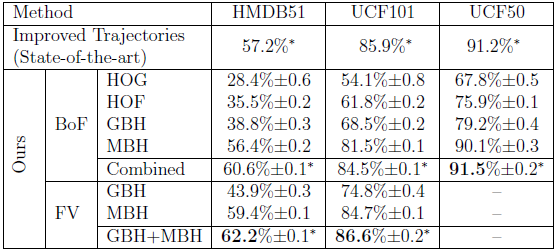
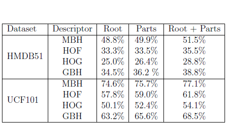

Fast human action recognition by Local Part Model.
Local Part Model
Abstract
We proposed a novel Local Part Model (LPM) for fast human action recognition. To account for out-of-ordering problem of bag-of-features approach, our local part model includes both a coarse root ST patch covering local event-content statistics and finer overlapping part ST patches integrating local structure and temporal relations. We introduced the idea of using very high sampling density for efficient and accurate action recognition by applying random sampling over LPM and through using integral video. For more information, check out publications [1, 2, 3]. Our code can be found [here]. If you use our code, please cite our works [1].We have made a substantial improvement over our CVPR2013[1] publication. The updated results are shown in the table. In this new improvement, we used separate root and part channels (check [2]), one-against-all multi-class SVM, a new efficient decriptor and a state-of-the-art optical flow method.

Performance

Effectiveness of LPM
The implementation details and codes for these recent results are from the PhD works to be published soon.
Publications
- F. Shi, E. Petriu, and R. Laganiere, “Sampling strategies for real-time action recognition,” in Proc. IEEE Conf. Computer Vision Pattern Recognition (CVPR), 2013. [.pdf] [code]
- F. Shi, R. Laganiere, E. Petriu, and H. Zhen, “LPM for fast action recognition with large number of classes,” Notebook paper in THUMOS: ICCV Workshop on Action Recognition with a Large Number of Classes, 2013. [.pdf]
- F. Shi, E. Petriu, and A. Cordeiro, “Human action recognition from local part model,” in Proc. IEEE Int. Haptic Audio Visual Environments and Games (HAVE) Workshop, 2011, pp. 35–38.
Contact
Paticipants
- Jeffrey Ryan Lalonde
Mehdi Arezoomand
Industry Partners